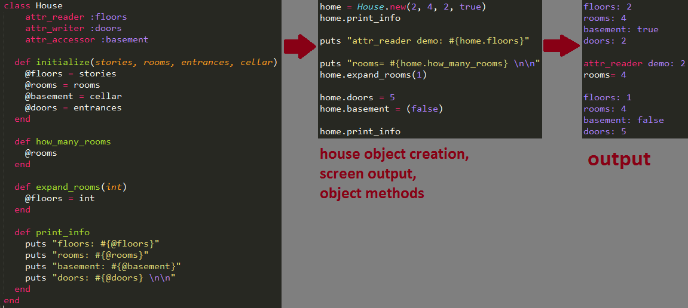

I have heard the term 'blue prints' used many times to describe what classes are. So why swim upstream?
Lets take a look at this house class that I've created:

Let’s say a builder gets a contract to build 10 houses in a new neighborhood and all the houses are going to be the same. The builder would not tell the architect to create 10 separate blueprints, he would just use the same blueprint for each house.
In Ruby a class is the blueprint and the houses are objects. A class in Ruby is a blueprint for creating a new type of object with specifically created methods and attributes. For example when you create a new array, you are created a new object from the array class along with its array methods.
When a variable inside a class has a ‘@’ symbol in front of it, that is an instance variable. That variable can be used in any method definition, within the class. Without the ‘@’ symbol that variable only exists with the method in which it is defined. It should also be noted that these variables are created for instances of the class (the object) not the class itself.
Lastly I’ll mention the attr_reader, attr_writer, and attr_accessor special methods that can be used inside class definitions. These replace the “get” and “set” methods that are often created inside of class definitions to protect variable data. By separating “get” and “set” a user cannot accidentally change the value of a variable. Attr_reader simplifies the “get” method and attr_writer simplifies the “set” method. The attr_accessor is a combination of the previous two. Check out the example above for a visual representation.
RyanImmesberger@gmail.com
Twitter: @rimmesbe